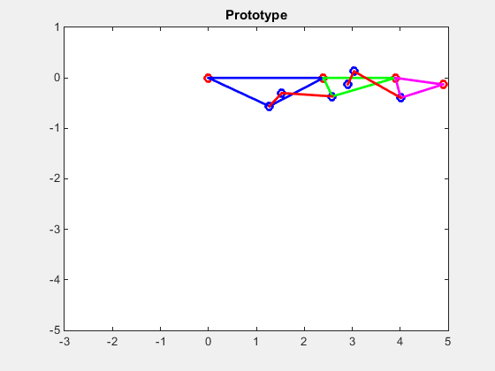

Passive Prosthetic Finger


- Category: Robot Mechanism Design
- Company: REWIRE Laboratory
- Project date: Fall, 2015
- Language: MatLab
The purpose of this project was to create a prototype for a prosthetic finger using a dual four bar linkage design to mimic the motion path of a curled finger. This was a unique type of prosthetic finger due to the fact that the patient's amputation was above the PIP joint, which most prosthetic fingers today are not deisgn for.
Before a prototype could be made, first I worked with a team of engineers to code a simulation of the motion path in MatLab.